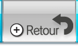

Au démarrage de la Chaîne Wii Speak, vous arrivez au salon de conversation. Ici, vous pouvez sélectionner les Mii qui vous représentent dans les conversations, et communiquer avec les autres membres du groupe de conversation que vous avez formé ou rejoint à l’accueil.
6 |
Salon de conversation |
 |
|
● Sélectionner des Mii（） ● Montrer des photos（ ● Composer un message（ ● Paramètres（ ● Code Wii（ ● Carnet d’adresses（ ● Accéder à l’accueil（ ● Aide（ ● Retourner au Menu Wii （） ● Quitter la conversation（ ● Mode silence activé ou non ：Le microphone fonctionne et le son émis par la chaîne est diffusé normalement. ：Le mode silence est activé et le microphone ainsi que le son de la chaîne sont coupés. |
 |
 |